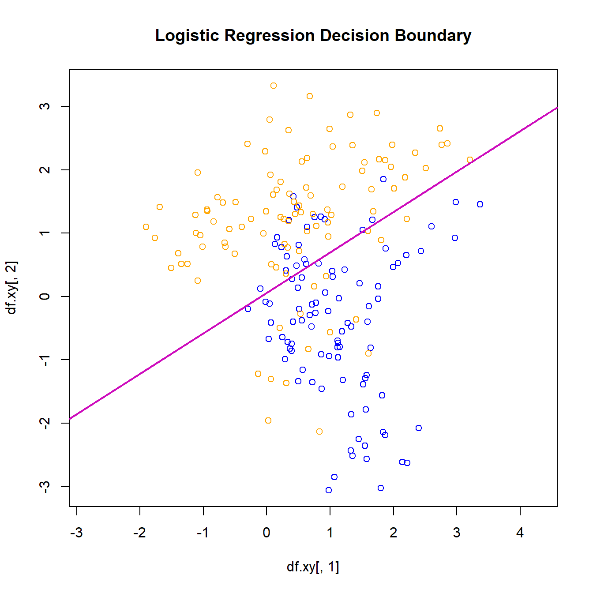

The k-nearest neighbors (k-NN) classifier is a non-parametric method used for classification tasks. Given a new observation ( s ), the method assigns it the most frequent class among its ( k ) nearest neighbors in the training set.
Mathematically, the probability estimate of belonging to class 1 at point ( s ) is:
where: - ( N_k(s) ) represents the set of ( k ) nearest neighbors of ( s ), - ( I(y_i = 1) ) is an indicator function that equals 1 if the observation belongs to class 1 and 0 otherwise.
The predicted class is given by:
\[
\hat{y}(s) = \arg\max_{c} \hat{P}_c(s)
\]
where ( _c(s) ) is the estimated probability of class ( c ).
In this document we illustrate how the boundaries of the classifer are affected by the tuning parameter \(k\).
Loading Data
We use a simulated dataset consisting of two-dimensional observations (features x and y) along with their class labels (BLUE / ORANGE).
x y class
129 1.6571264 1.69028128 ORANGE
79 1.7619121 -0.03763311 BLUE
128 1.9784318 2.39569074 ORANGE
175 0.3432323 1.19023999 ORANGE
162 1.5415648 2.11320662 ORANGE
5 1.6147111 -0.15127696 BLUE
121 1.4132759 -0.36301251 ORANGE
39 1.5910748 -0.39521427 BLUE
20 1.5566739 -1.28863317 BLUE
197 2.3409278 2.27217254 ORANGE
Now let’s see how Knn works for one point
k <-40s <-0t <-0st <-c(s,t)# Compute distances between (s,t) and all data pointsd_st_xy <-as.matrix(dist(rbind(st, df.xy[,1:2])))[1, -1]# Identify the k-th smallest distanced_st_xy_k <-sort(d_st_xy, partial=k)[k]# Identify the indices of the k nearest neighborsN_st_k <-unname(which(d_st_xy <= d_st_xy_k))# Compute probability estimate of class 'ORANGE' at (s,t)(pr_1_k_st <-sum(df.xy[N_st_k,3] =='ORANGE') / k)
[1] 0.25
This code: 1. Defines a test point ( (s,t) = (0,0) ). 2. Computes distances to all training points. 3. Selects the ( k ) nearest neighbors. 4. Estimates the probability of class ‘ORANGE’ at ( (s,t) ).
Displays the dataset with colors representing different classes.
Highlights the selected neighbors of the test point ( (s,t) ).
Generalizing the k-NN Classifier
The process can be encapsulated in a function.
knn.class <-function(st, xy, group, k=3) { d_st_xy <-as.matrix(dist(rbind(st, xy)))[1, -1] d_st_xy_k <-sort(d_st_xy, partial=k)[k] N_st_k <-unname(which(d_st_xy <= d_st_xy_k))return(sum(group[N_st_k] ==1) / k) # Probability of class 1}
This function: - Computes distances between a test point st and all training points xy. - Identifies the ( k ) nearest neighbors. - Estimates the probability of the test point belonging to class 1.
Using the k-NN Classifier
st <-c(0,0)group <-as.numeric(df.xy[,3] =='ORANGE')knn.class(st=st, xy=df.xy[,1:2], group=group, k=40)
[1] 0.25
This code predicts the class probability for ( (0,0) ).
Creating a Probability Map
s <- t <-seq(-3.5, 3.5, by=.1)ns <-length(s)nt <-length(t)hat_p <-matrix(0, nrow=ns, ncol=nt)k <-50for (i in1:ns) {for (j in1:nt) { hat_p[i, j] <-knn.class(st=c(s[i], t[j]), xy=df.xy[,1:2], group=group, k=k) }}
This block: - Defines a grid of test points in the feature space. - Computes class probabilities for each grid point using k-NN.
This plot: - Shows the decision boundary where the class probability is 0.5.
Comparison with Logistic Regression
# Fit logistic regression modelglm.class <-glm(group ~ x + y, data=df.xy, family=binomial)b012 <-coefficients(glm.class)# Create a new plot to ensure abline() has a base plotplot(df.xy[,1], df.xy[,2], col=df.xy[,3], asp=1, main="Logistic Regression Decision Boundary")# Add decision boundary lineabline(a =-b012[1]/b012[3], b =-b012[2]/b012[3], lwd=2, col=6)

This fits a logistic regression model and plots its decision boundary for comparison.
K-NN classifier is also a flexible classifier
We observe that: - k-NN produces a flexible decision boundary, adapting to the local structure of the data. - Larger ( k ) values create smoother boundaries, reducing variance. - Logistic regression assumes a linear boundary, which may not be suitable for non-linear patterns.